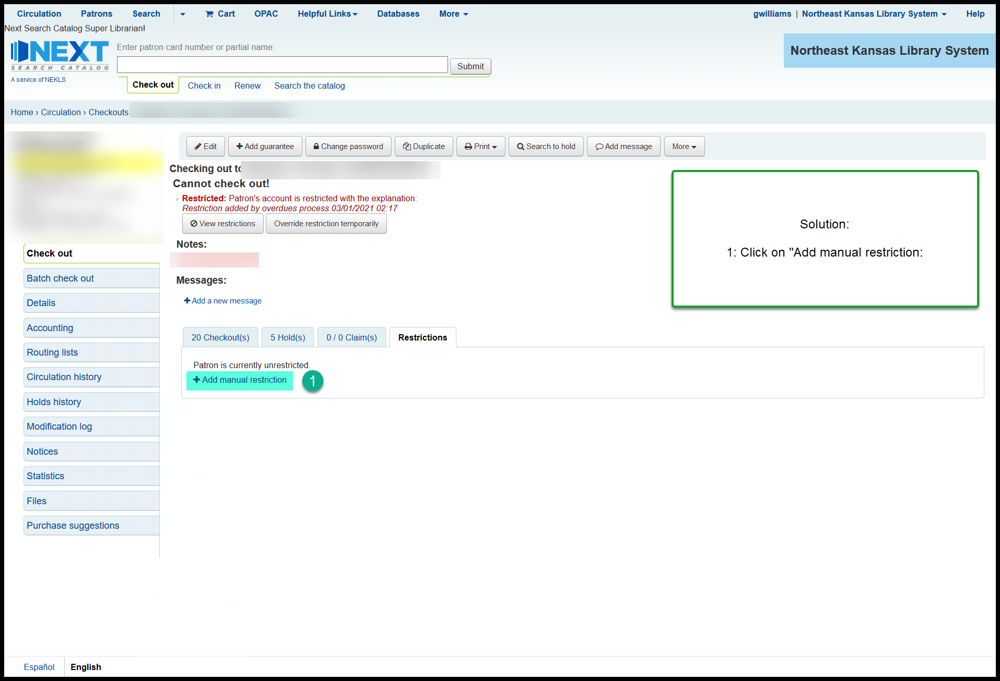
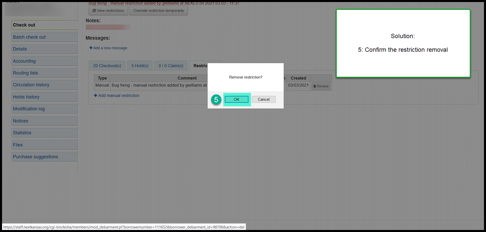

Phantom restrictions bug¶
There is a bug in Koha that is creating “phantom” restrictions.
You can identify these restrictions when you open a borrower’s account and see a message that says there’s a restriction but when you click on the “View restrictions” button, there are no restrictions listed.
This is what the problem looks like:¶

This is the solution:¶
- In the restrictions tab, click on “Add manual restriction”

- Click on the “Add restriction” button (you can, optionally, make a note about the restriction)
- Then click on “Remove” restriction
- Click “Yes” in the pop-up window to confirm that you do want to remove the restriction

- All restrictions should now be gone
What causes this problem:¶
We believe this is caused by Koha community bug 26208
For the example in the screenshots above:
The borrower’s account was blocked on March 1 when two of the items they had checked out were overdue for more than 35 days and they were sent a “Library account blocked” email.
The two items were renewed on March 2.
The restriction was removed from the table in the database called “borrower_debarments” but it was not removed from the table called “borrowers.” This is a known bug in Koha and the Koha community is working to solve the problem. In fact, a patch has been created. If possible the patch will be added to our system as soon as possible. It is possible, however, that we may have to wait for the next upgrade for this problem to be permanently fixed.
The reason that the solution listed above works is because, when you add the new restriction to an account, Koha has to update both tables - borrowers and borrowers_debarments. When Koha updates those tables, the process of adding and removing debarments recognizes that there is a discrepancy between the two tables and fixes it. That way when you take off the new restriction, the phantom restriction is no longer there.